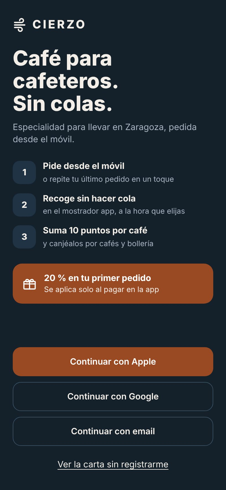
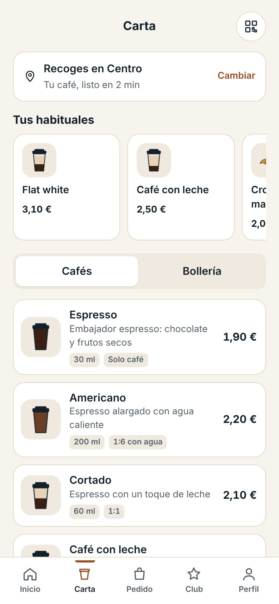

CIERZO: coffee for coffee lovers. No queues.
A specialty takeaway coffee brand in Zaragoza, built from scratch. You order on your phone, pick up without queuing at the app counter or a partner point, and every order earns points in the CIERZO Club.
- Type
- Own brand · omnichannel
- My role
- Strategy, audience, value proposition, app and launch
- Channels
- Shop, app, Instagram, TikTok, LinkedIn and podcast
- Launch budget
- €10,000 spread over one quarter
The campaign, out in the world.
How CIERZO's funnel would look on a phone: from the welcome screen to the “your order is ready” alert, screen by screen.





The app from phase 1.
Each screen handles one step of the funnel (the plan's MF microfunnels), from sign-up with a 20% welcome offer to the “your order is ready” alert.
Swipe → · click to enlarge
off the first order, only when paying in the app
per coffee and 5 per pastry; 100 points gets a free coffee
Brisa and Cierzo, with tastings and exotic editions
for pick-up in Zaragoza: shop and partners
The strategy.
Convenience first
Order without queuing and pick up wherever suits you. Good coffee is a given; what builds loyalty is the time you save.
20–35, studies and works
Active on social media and always in a hurry: wants good coffee without wasting time in a queue.
1Phase 1
Takeaway + app: queue-free pre-ordering and points Club
2Phase 2
Coffee beans: ecommerce inside the app
3Later
Own-brand machines and office service